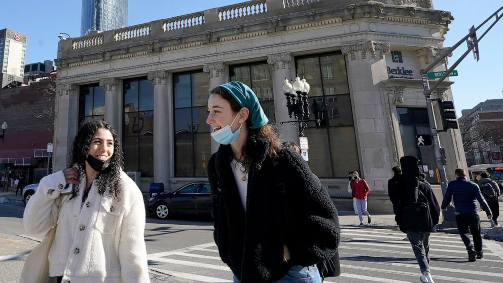

Ronald Mcdonald Retires and Joins Burger King
Image from Mashed

Ronald Mcdonald, the McDonalds mascot has finally retired
after 42 years of dressing up like a clown. He just recently
announced that he joined Burger King for a salary of $20
a year. Many people are surprised as to why he would leave
such a prestigous position at one of the most popular fast
food chains in history. Scientists believe it was because
"little kids would bully him for looking like an idiot" says
scientist from McDonalds University. A lot of people have
gone into depression after their famous mascot left. Johnson
Pooip said "I love Ronald and wish I could marry him." After
some further investigation, authorites have found out that
Ronald Mcdonald has changed his name to Donald BurgerKing.
If you have any more information as to why this happened,
please contact Arjun Mehrotra.
Chimpanzees Invade North Korea After
Man Said He "hates chimpanzees"
Image from WorldWildLife

Chimpanzees have crowded small villages in North Korea
after man said he "hates chimpanzees." The chimpanzees
heard about this horrible man and quickly tracked him down.
They traveled across the sea from Africa to make sure that
man would get what he deserves. And he did. The man was
bombarded with chimapnzees who jumped on him and bit him
on his ears. A reporter who was recording this said that
"the man's ears were gone lol." During this attack, chimpanzees
came across other people who were eating bananas. Those
people lived to regret it. You see, the chimpanzees saw the
bananas and instantly went crazy. They took all the bananas
and chomped them all down. That day, there was so much
banana poop that the entire nation had to wear N95 masks
to not throw up every 2 seconds.
Student Thinks she is the main character,
then breaks neck. Ending will shock you
Image from Wikipedia

Rock Middle School student has broken neck while standing
on cafeteria table. The student was singing ‘Fight Song’
by Rachel Platten, according to other students she was
singing this because fellow classmates were bullying her
and she wanted to have “her moment”. Parents are
threatening to sue the school for not having safe tables.
The principal refuses to even pay for neck surgery because
the school is broke from the bathroom and cafeteria food
incident. The student was in the hospital but got kicked out
because her parents could not afford it. She now has to be
cared for in her parents house but her condition is only
getting worse.
Students at PVMS are Saying That
"SMNews is the best thing that ever happened us"
Image from SMNews

A student at Pine Valley says he "loves smnews." SMNews
has grown very popular over the last few weeks and is a
surprise to some people that such an honest company can
grow so large. Arjun Mehrotra, CEO of SMNews, is very
proud of the SMNews team and said that "I hope we can
continue doing this for the rest of the school year, maybe
even turn into an actual company." So many people have
helped SMNews grow, especially the advertising and article
team. "Without the advertisers we would never be here today."
says CEO Arjun Mehrotra. Our competitors "The New York
Times" and "The Wall Street Journal" stocks have crashed 180%
ever since February 14, 2022, the day SMNews was founded.
Gaming Mouses have been banned
for being "too colorful"
Image from ThermalTake

Gaming mouses have been banned in the USA after kid
flashes the rgb light into president Doe Jiden's face. Doe
Jiden was so mad that he kicked the child in his face and
broke his "stupid gaming mouse." The parents of the kid
sued Doe Jiden for fraud, manslaughter, physical abuse,
first degree murder, and robbing a bank. The kid started
crying when his $5000 gaming mouse he bought off Wish.com
broke. He begged his parents to get him a new one but they
would not budge. Some reporters recorded the footage of
Doe Jiden being violent and sent it to everyone in the mail
for some reason. Doe Jiden has been replaced with Tonald
Drump, a former president and government worker. Scientists
have said that the rgb light in gaming mouses is so powerful
that if you compare it to the sun, it would win. This is a huge
problem for major companies because now they have to
remove the rgb factor of their mouses, which was the only
reason people would buy it.
CDC Eases Covid Mask Guidelines
Image from ABC News

The CDC has started to ease the covid mask guidelines after a steep drop
in cases and mitigation efforts nationwide. The Center for Disease Control
and Prevention started to assess each county by its covid severity level.
The three factors on assessing will be new Covid-19 cases per 100,000
residents in the past seven days, new Covid-19 cases per 100,000 residents
in the past seven days, and new Covid-19 related hospital admissions. There
were three risk categories based on Covid-19 cases: high, medium, and low.
The new guidelines focus on minimizing severe disease and containing any
new cases. The CDC now recommends school masking only in counties where
Covid-19 levels are high. They did this because most children are at a relatively
lower risk of severe disease and are mostly asymptomatic. CDC stated that
"We need to be able to relax our layered prevention measure when things
are looking up and, we need to be able to dial them again... should we have
a new variant or surge."
Vladimir Putin Announces Deployment
of a New Generation of Aircraft and
Armored Vehicles.
Image from Observador

As the Russian military forces face fierce resistance from
the Ukrainian army and paramilitary groups, Putin decides
to consider deploying their new “Sukhoi SU-57” as a way
to demoralize the Ukranians by shooting down the “Ghost
of Kyiv”. “Our T-90 tanks are not effective against the
Ukrainian resistance”. Says Russian army general Valery
Vasilyevich Gerasimov. As of Monday, 15 of Russia’s new
T-14 armata tanks are deployed in Belarus. The Moscow
Kremlin argues that deploying newer vehicles will be too
costly and a waste of manpower. But Putin declares that
in order to take Kyiv, they will need vehicles that are able
to withstand guerilla warfare tactics.
This article was written by
Konnor Ly
Apple is Closing Down After Lawsuit
With Microsoft
Image from Tech Pluto

Apple is closing down after a lawsuit with Microsoft.
Apple was given a copyright claim for copying one of Microsoft's
products: Microsoft Word. Apple developed Apple Word,
an almost identical replica of Microsoft Word. After a few
months, Microsoft employee Jen Stevenson found out that
Apple was copying Microsoft. She quickly filed a copyright
claim with the Washington Police and immediately caught
Apple's attention. Tim Cook tried to fight with the lawyer
but immediately realized that he wouldn't win. He was
devasted when the lawyer sent him to jail and forced Apple
to shut down on March 1, 2022. Many people try to justify
what Apple did but the lawyer did not get Tim a bail. Tim
Cook said that he would try to start a new company
called Orange, but he is in jail for the next seven years
so he can't. If you have an Apple product, the warranty
will expire, and the product will stop working in 21 days.